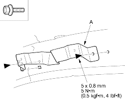
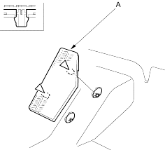

- If necessary, remove the bolts, then remove the grab handle bracket (A). Remove the remaining grab handle brackets, as needed.
| Fastener Locations |
 : Bolt, 6 : Bolt, 6 |

- Install the headliner in the reverse order of removal and note these items:
- When reinstalling the headliner through the door opening, be careful not to fold or bend it. Also, be careful not to scratch the body.
- Check that both sides of the headliner are securely attached to the trim.
NOTE:
- Put on gloves to protect your hands.
- Take care not to damage, wrinkle or twist the carpet.
- Be careful not to damage the dashboard or other interior trim pieces.
- Remove these items:
- Front seats, both sides (see page 20-229)
- Rear seat cushion, both sides (see page 20-237)
- Kick panels, both sides (see page 20-206)
- Front door sill trim, both sides (see page 20-206)
- Rear door sill trim, both sides (see page 20-206)
- Dashboard centre lower cover (see page 20-217)
- Driver's dashboard under cover (see page 20-216)
- Passenger's dashboard lower cover (see page 20-220)
- Detach the clips, then remove the footrest (A).
Fastener Locations  : Clip, 2
: Clip, 2
